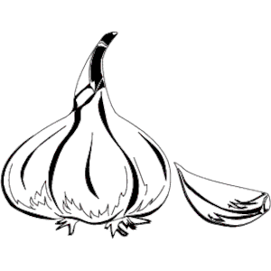
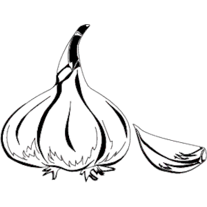

Crockpot Blackeye Pea and Vegetable Soup
Introduction
Nothing is more comforting than warm soup and garlic bread during a study break.
Instead of reaching for a can of soup in your pantry, you can make this easy no-fuss vegetable soup in your handy Crockpot!
The amazing thing about this soup is that slow cooking the recipe makes a very flavorful soup and your prep time is only 20 minutes!
So, you can put the ingredients together before your study session and four hours later, sit down for a tasty meal. This recipe makes around 8 to 10 servings.
It’s easy to reheat in the microwave or freeze for another time.
Ingredients
Serves 8 to 10 Cook time: 4 hours
2 tbsp Extra virgin olive oil
2 tbsp Minced garlic
1 large Sweet onion, chopped
1 medium Zucchini, chopped
½ medium Green bell pepper, chopped
½ medium Red bell pepper, chopped
1 cup Baby carrots, diced
1 cup Roma tomatoes, chopped
1 cup Okra, diced
1 can Black eyed peas, drained and rinsed
½ cup Wild or Brown rice
32 ozs. Vegetable stock
2 dry bay leaves
2 tsp ground cumin
1 tsp dry thyme
½ tsp cayenne pepper (optional)
Instructions
In a large pan, heat extra virgin olive oil over medium heat for about 30 seconds.
Add onions and garlic and saute briefly until translucent, then add bell peppers and tomatoes.
Add cumin and thyme, then cook for 5 minutes while stirring the mixture.
Transfer the onion and tomato mixture to your Crockpot, then pour in your blackeye peas, zucchini, carrots and okra.
Pour in the vegetable broth and add the bay leaves, salt and pepper.
Set the Crockpot to high and your kitchen timer for 3 hours.
Now you have three hours to study, relax or do something fun!
Add the rice after three hours and cook for another hour.
Serve with toasted bread
 
